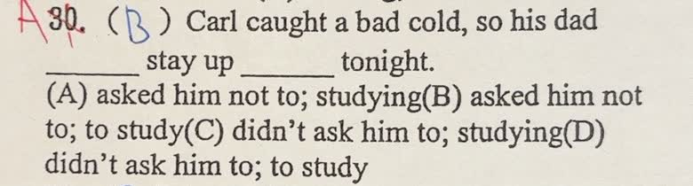

分享原卷｜第 30 題
完整原題
先想一想，再查看答案、解說與原圖
逐項解析
| 選項與原句 | 判讀 | 句意與判斷理由 |
|---|---|---|
| (A) asked him not to; studying | 應選 | asked him not to stay up是叫他不要熬夜；stay up studying表示熬夜讀書。 |
| (B) asked him not to; to study | 不選（本題語意較不順） | 文法可以成立，to study表示為了讀書而熬夜；本題以studying直接描述熬夜讀書更自然，故選A。 |
| (C) didn’t ask him to; studying | 不選 | didn’t ask是不曾要求，不能表達因感冒而勸他不要熬夜的意思。 |
| (D) didn’t ask him to; to study | 不選 | to study本身可作目的，但didn’t ask只表示沒有要求，不是本題勸他不要熬夜的意思。 |
詳細說明與解題步驟
【第一格：叫他不要，不是沒有叫他】
Carl重感冒，所以父親叫他今晚不要熬夜讀書。ask＋人＋not to V表示「叫某人不要做某事」；didn’t ask＋人＋to V只表示「沒有要求某人做」，無法直接表達這裡因感冒而勸阻的語意，因此排除C、D。
【第二格：stay up studying的直接搭配】
stay up＋V-ing可描述熬夜時持續做的事，stay up studying就是「熬夜讀書」，本題選studying最直接自然。
完整句子：Carl caught a bad cold, so his dad asked him not to stay up studying tonight.
白話：Carl得了重感冒，所以爸爸叫他今晚不要熬夜讀書。
【B的問題是本題語意，不是文法不成立】
B的stay up to study在文法上可以成立，to study表示目的，可理解為「為了讀書而熬夜」。但本題以stay up studying直接描述要被勸阻的「熬夜讀書」活動，語意與搭配較順，因此以A為最佳答案。
不要把這次選A記成「stay up後永遠不能接to V」；要分清V-ing描述同時進行的活動，to V突出目的。
核對註記：完整原題與選項已核對；使用者確認選A，B文法可以成立但本題語意不如A順。已結案。
原圖（僅本題）
